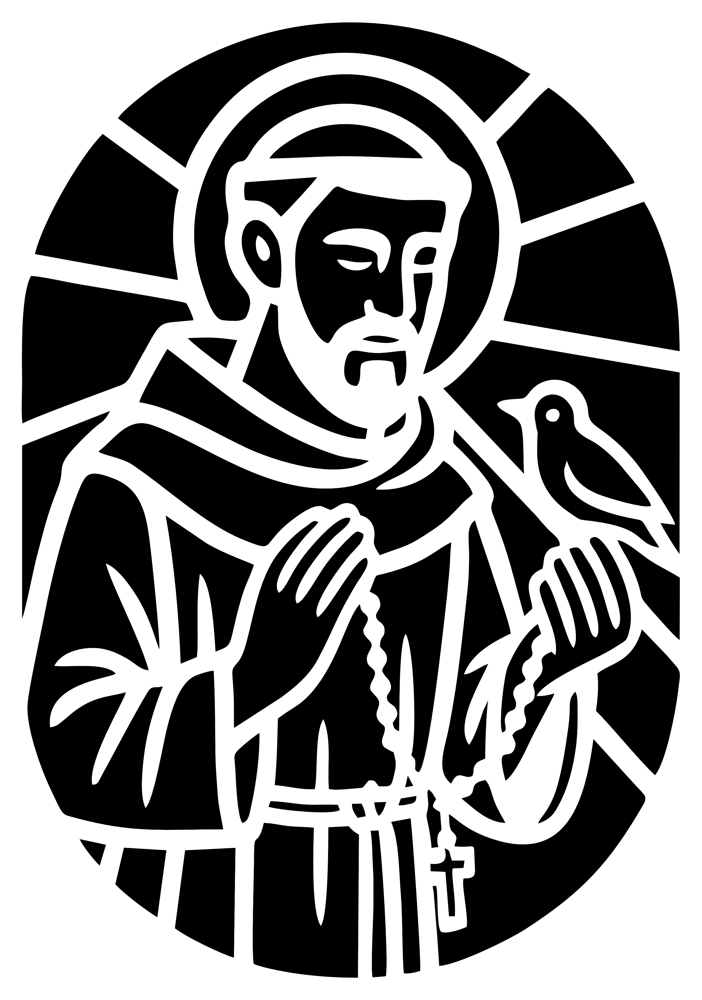

Uma Irmandade Sobre Duas Rodas e Uma Só Fé
O Archanges of Machine nasceu na estrada, entre curvas, vento no rosto e paradas silenciosas diante de altares esquecidos. Tudo começou com um motociclista solitário, percorrendo o interior do Brasil em busca de algo mais profundo do que paisagens e adrenalina: ele procurava fé viva nos pequenos e grandes templos católicos espalhados por aí.
A cada cidade, uma nova missa. A cada igreja, uma nova história. Foi assim que ele descobriu que, apesar de todos professarem a mesma fé, cada comunidade católica possui sua própria alma, sua própria maneira de viver e celebrar o Evangelho.
Com o tempo, outros irmãos de estrada começaram a se juntar a ele. Não apenas pelo ronco dos motores, mas pelo eco da oração. Assim nasceu o Archanges of Machine MC: um Moto Clube que une católicos apaixonados por estrada e pela missão de evangelizar em movimento.
Hoje, o MC promove viagens de fé onde a oração acompanha o giro do motor. Cada rota é pensada para visitar igrejas históricas, apoiar comunidades carentes, participar de celebrações leigos ou ministros e promover eventos religiosos como terços e novenas. Mais do que um clube, somos uma missão itinerante sobre duas rodas.
Padroeiro 2024–2025: São Francisco de Assis
A cada dois anos, o MC elege um padroeiro que inspira suas ações, eventos e espiritualidade. Para o biênio 2024–2025, o escolhido é São Francisco de Assis, exemplo vivo de humildade, serviço, amor à natureza e aos mais pobres.
Inspirados por ele, o Archanges of Machine MC traça as seguintes metas pastorais para o período:
- ✝ Criar redes de oração por irmãos motociclistas acidentados, doentes ou em missão
- ✝ Promover ações de cuidado com animais em situação de rua, como arrecadação de ração e apoio a abrigos locais
- ✝ Realizar mutirões de limpeza e conscientização ambiental ao redor de igrejas, praças e pontos turísticos religiosos
- ✝ Desenvolver uma rota ecológica visitando paróquias com projetos de sustentabilidade ou hortas comunitárias
- ✝ Participar da bênção dos animais em celebrações franciscanas e incentivar o respeito à Criação em todas as viagens
São Francisco não pilotava uma moto, mas entendia como ninguém o que é caminhar pelo mundo levando o amor de Cristo. Que ele nos inspire em cada quilômetro rodado.